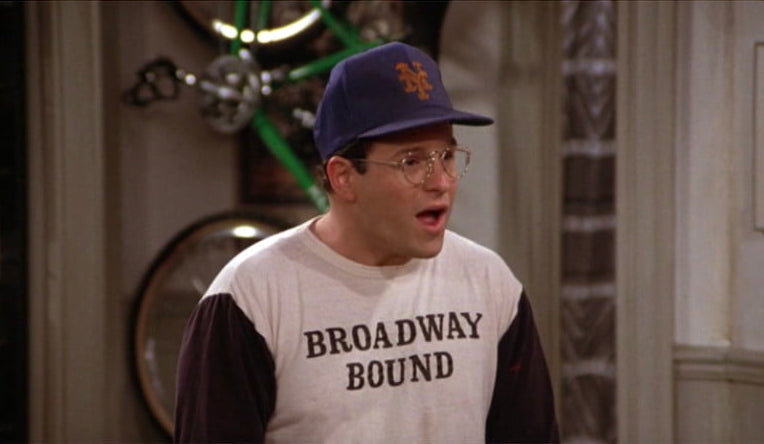
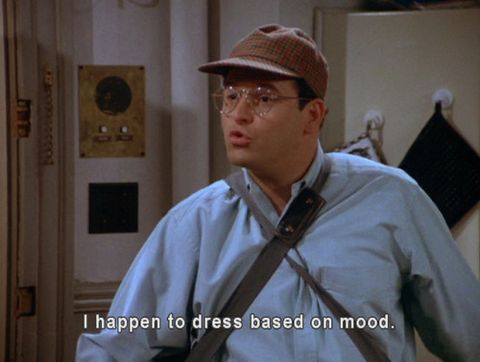
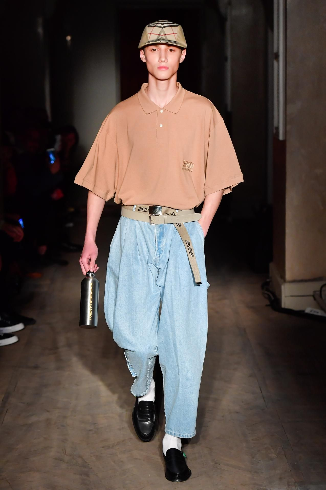
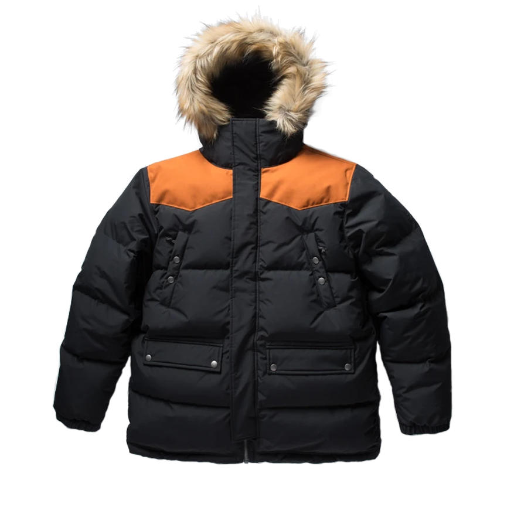
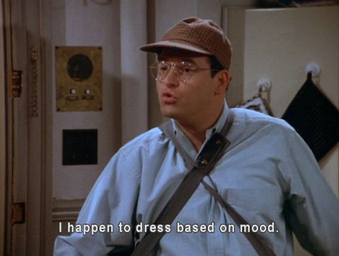
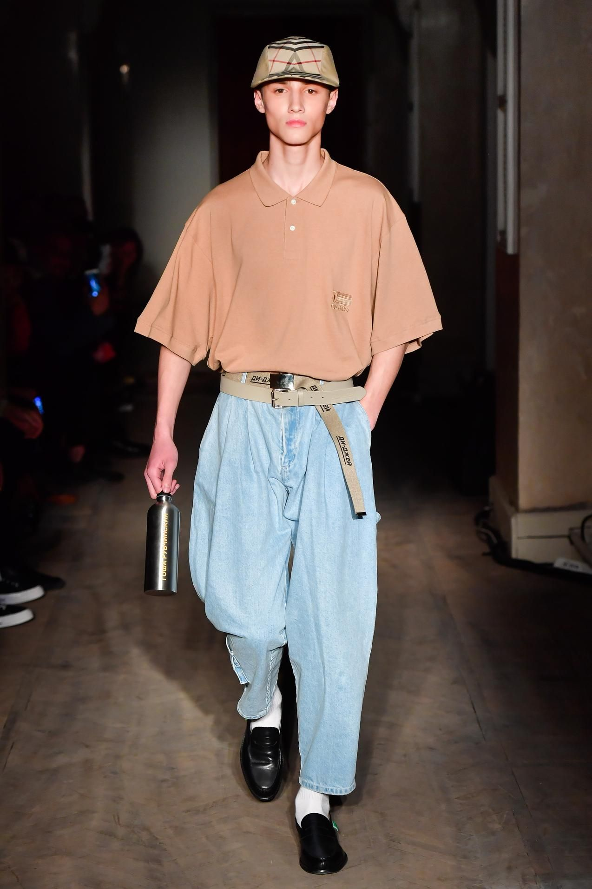
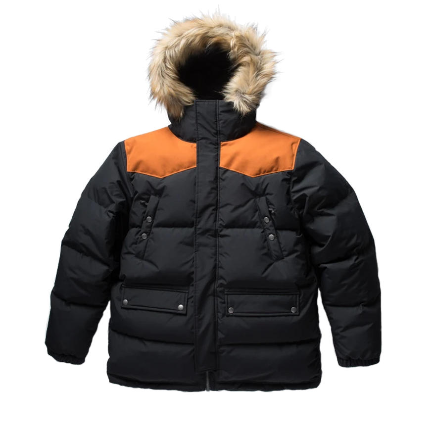

Straight and serviceable. He favored plaid (shirts, sweaters, scarves, probably socks too), pleated Dockers in all colors, cardigan sweaters and anoraks. For a little excitement, he opted for an argyle pattern.
“The guy’s cheap,” says Charmaine Simmons, costume designer, of George. “That’s where his look came from,” recalling shopping expeditions for him in strange, far-flung clothing warehouses “like jobbers.”
 




